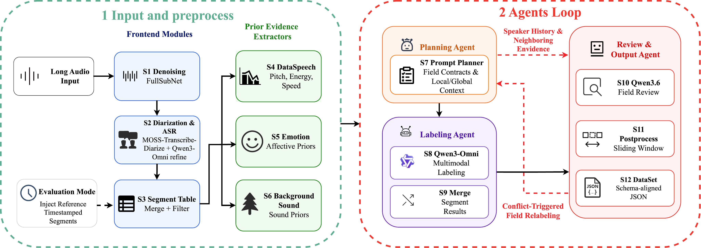
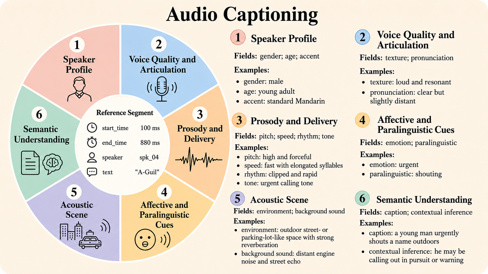
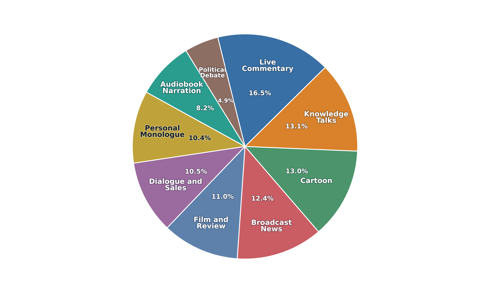

Lowest character error rate on SA-Bench.
Speech annotation demo page
SpeechAnnotator
A Context-Aware Multi-Agent Framework and Benchmark for Multidimensional Speech Annotation
8.87 h
SA-Bench audio
15
evaluated attributes
81.27%
attribute macro score
Abstract
Locally deployable speech annotation with evidence-aware agents.
Recent controllable speech generation requires fine-grained training data that describes speaker traits, prosody, emotion, paralinguistic cues, acoustic scenes, and surrounding context. Existing workflows often rely on manual correction, paid hosted multimodal services, or fixed processing chains, limiting scalable annotation through cost, external-service dependence, and weak cross-stage recovery.
SpeechAnnotator is a locally deployable, context-aware multi-agent framework built from open-source models and tools. Frontend modules construct speaker-aware segments and refined transcripts, prior extractors attach heterogeneous segment-level cues, and three specialist agents coordinate through shared state: Planning creates field-specific contracts, Labeling performs contract-guided multimodal prediction, and Review checks evidence support plus cross-segment consistency through a bounded field-level relabeling loop.
The paper also introduces SA-Bench, 8.87 hours of human-annotated audio across nine source formats, and SA-Eval, which separates Timeline-Eval, Closed-Eval, and Open-Eval. Experiments show that SpeechAnnotator provides a competitive local alternative to commercial audio-capable systems while improving multidimensional annotation through evidence- and context-aware recovery.
Pipeline
Context-aware multi-agent annotation chain.

Annotation Schema
Six evidence-oriented groups for audio captioning.

SA-Bench Distribution
Benchmark coverage across nine source formats.

Results
Strong timeline recovery and competitive attribute annotation.
19.92 points below the strongest commercial baseline.
Second overall under fixed-timeline evaluation.
Top score on tone, pitch, speed, rhythm, texture, pronunciation, and paralinguistic cues.
| System | CER lower | cpCER lower | tcpCER lower |
|---|---|---|---|
| SpeechAnnotator | 12.42 | 28.16 | 33.69 |
| MOSS-Transcribe-Diarize | 12.84 | 28.70 | 34.08 |
| Seed2.0 Lite | 13.90 | 33.62 | 53.61 |
| Qwen3.5-Omni-plus | 14.17 | 26.31 | 56.25 |
| Gemini 3.1 Pro Preview | 23.06 | 42.58 | 67.18 |
| Gemini 2.5 Pro | 20.51 | 37.80 | 69.59 |
Ablation summary
Context-aware planning, prior evidence, and the bounded review loop contribute 1.48, 1.20, and 0.85 points respectively to the average attribute score, showing that the system benefits from both local acoustic evidence and long-context consistency checks.
Audio Demo
One-minute continuous excerpts with synchronized metadata.
Each player uses a long source recording and plays one selected continuous 60-second window. The metadata panel is synchronized to the active segment, and every segment below exposes its text and full metadata fields for inspection.